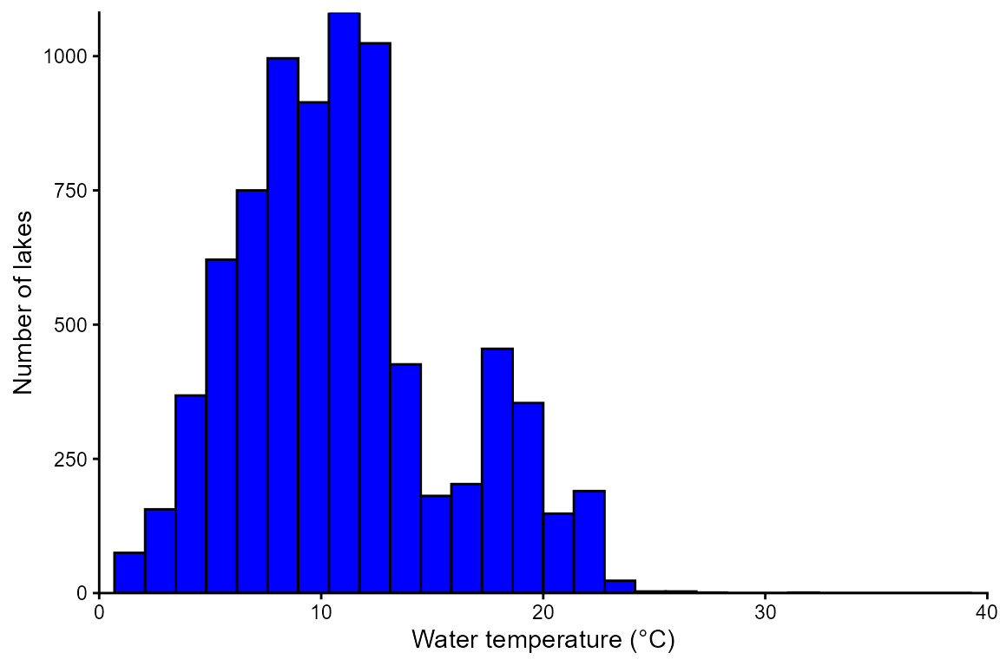
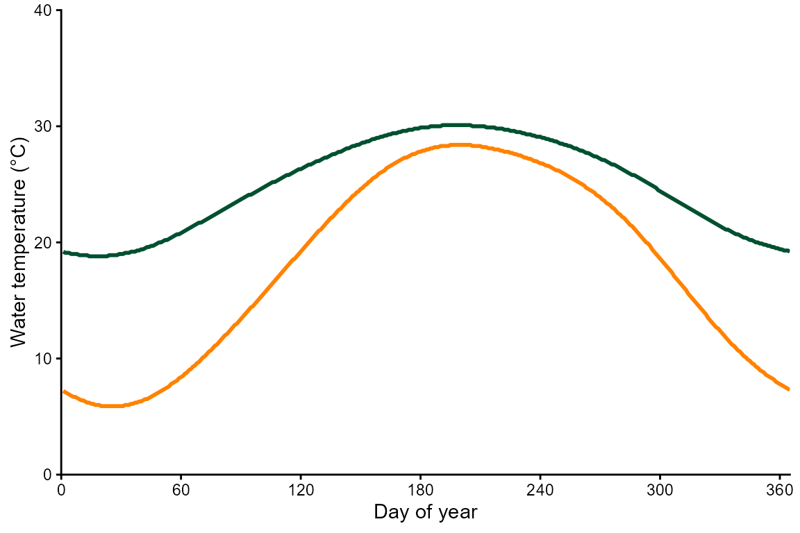
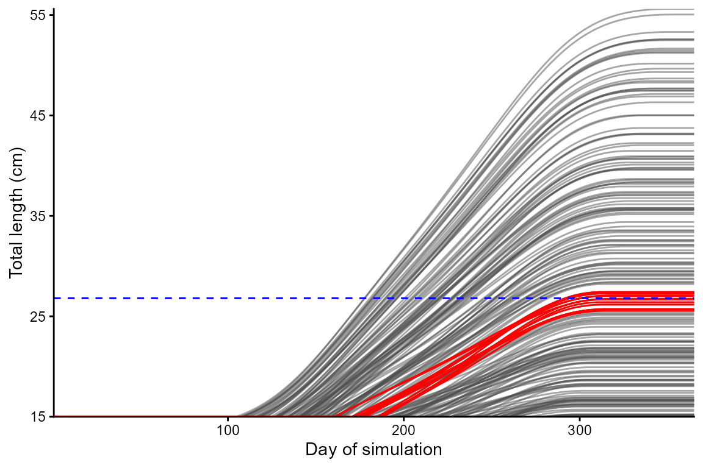
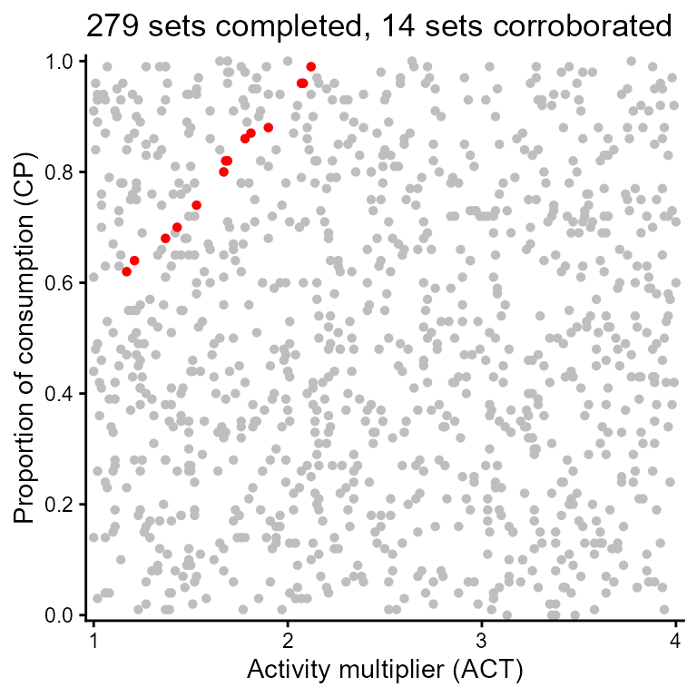

Corroboration
Corroborate.RmdVignette objectives
- Learn how to corroborate a bioenergetics model. That is, you will simulate 365 days of growth and then use empirical length-at-age estimates from a field study to identify consumption (CP) and activity (ACT) values that produce realistic growth.
- Visualize growth trajectories.
- Visualize corroborated combinations of CP and ACT.
Install and load fishyenergy
remotes::install_github("bomeara/fishyenergy")
#> rlang (1.1.7 -> 1.2.0) [CRAN]
#> cli (3.6.5 -> 3.6.6) [CRAN]
#> package 'rlang' successfully unpacked and MD5 sums checked
#> package 'cli' successfully unpacked and MD5 sums checked
#>
#> The downloaded binary packages are in
#> C:\Users\ysw841\AppData\Local\Temp\Rtmpst8IdZ\downloaded_packages
#> ── R CMD build ─────────────────────────────────────────────────────────────────
#> ✔ checking for file 'C:\Users\ysw841\AppData\Local\Temp\Rtmpst8IdZ\remotes1179c48172a47\bomeara-fishyenergy-1eaaef4/DESCRIPTION'
#> ─ preparing 'FishyEnergy': (7.3s)
#> checking DESCRIPTION meta-information ... checking DESCRIPTION meta-information ... ✔ checking DESCRIPTION meta-information
#> ─ checking for LF line-endings in source and make files and shell scripts (508ms)
#> ─ checking for empty or unneeded directories
#> ─ looking to see if a 'data/datalist' file should be added
#> ─ building 'FishyEnergy_0.1.0.tar.gz' (703ms)
#>
#>
library(FishyEnergy)Load largemouth bass parameters
Start by loading the intrinsic bioenergetics parameters of five example species. These parameters have been published by various authors since the 1980s and are available from Fish Bioenergetics 4.0.
Retain only one focal species, largemouth bass Micropterus salmoides, and look at these data.
- The first column shows the Latin name in snake case.
- Other columns like lwA and lwB are the intercept and slope of the length-weight equation acquired from FishBase.
- Still other columns like CA and CB are the intercept and slope of the mass dependent consumption equation (a negative power law).
- There’s also specific dynamic action (i.e., the proportion of energy consumed allocated to the cost of digestion), predator energy density, and many other variables defined by Hanson et al. (1997).
options(width = 500)
parms.micsal <- parms_fb4[parms_fb4$genus_species == "micropterus_salmoides",]
parms.micsal
#> genus_species LifeStage Source lwA lwB CEQ CA CB CQ CTO CTM CTL CK1 CK4 REQ RA RB RQ RTO RTM RTL RK1 RK4 SDA FA UA pred_ED
#> 2 micropterus_salmoides adult Rice et al. 1983 0.0226 2.781 2 0.33 -0.325 2.65 27.5 37 NA NA NA 1 0.008352 -0.355 0.0313 0.0196 0 0 1 0 0.15848 0.104 0.08817 4184Load temporally-varying parameters
We need to load some parameters that potentially vary temporally. The dataframe has 365 rows representing each day of the year. There are five noteworthy columns (i.e., variables).
options(width = 500)
data(parms_temporal_DEFAULT)
dim(parms_temporal_DEFAULT)
#> [1] 365 6
head(parms_temporal_DEFAULT)
#> date CP ACT gsi_f gsi_m prey_ED
#> 1 1/1/2025 1 1 0 0 3698
#> 2 1/2/2025 1 1 0 0 3698
#> 3 1/3/2025 1 1 0 0 3698
#> 4 1/4/2025 1 1 0 0 3698
#> 5 1/5/2025 1 1 0 0 3698
#> 6 1/6/2025 1 1 0 0 3698- CP is the proportion of maximum consumption and decrease as prey quantity declines or as exploitative competition increases.
- ACT is the activity multiplier where a value of zero would indicate no metabolic costs beyond being at rest. Maintaining position in a flowing stream, avoiding predators, pursuing prey, and engaging in reproductive behavior increase ACT.
- The next two parameters (gsi_f and gsi_m) allow the user to model somatic growth of a reproductively mature fish that allocates some energy to gonadal tissue. Separate parameters are provided for females and males because the sexes invest different amounts of energy to their gonads. The default data assume a reproductively immature fish (i.e., gsi = 0).
- Modifying prey energy density (prey_ED) over the year can simulate ontogenetic diet shifts or changes in prey quality. There are numerous published estimates of prey energy density for common prey items like invertebrates, fish, and so on (see Appendix B from Hanson et al. 1997).
Load lake temperatures
Let’s explore some lake temperature data modified from the open-source LakeTEMP dataset (Korver et al. 2024). In brief, this dataset provides monthly lake surface temperatures for 1,427,688 lakes throughout the world as well as some geographic (e.g., elevation above sea level) and bathymetric (e.g., lake depth) covariates for these lakes. In fishyenergy, we have extracted these monthly temperatures for 8,001 lakes in 15 southeastern US states plus Puerto Rico. We then used a generalized additive model fitted to monthly temperatures to interpolate temperatures to the daily resolution needed for bioenergetics modeling. Let’s load this dataset called temps_lake in fishyenergy. The dataset has 8,001 rows each representing a different lake and 366 columns representing the unique lake ID (Hylak_id) followed by the 365 julian days. We print only the first 90 days or three months of the year.
options(width = 2000)
data(temps_lake)
dim(temps_lake)
#> [1] 8001 366
head(temps_lake[,1:91])
#> Hylak_id julian001 julian002 julian003 julian004 julian005 julian006 julian007 julian008 julian009 julian010 julian011 julian012 julian013 julian014 julian015 julian016 julian017 julian018 julian019 julian020 julian021 julian022 julian023 julian024 julian025 julian026 julian027 julian028 julian029 julian030 julian031 julian032 julian033 julian034 julian035 julian036 julian037 julian038 julian039 julian040 julian041 julian042 julian043 julian044 julian045 julian046 julian047 julian048 julian049 julian050 julian051 julian052 julian053 julian054 julian055 julian056 julian057 julian058 julian059 julian060 julian061 julian062 julian063 julian064 julian065 julian066 julian067 julian068 julian069 julian070 julian071 julian072 julian073 julian074 julian075 julian076 julian077 julian078 julian079 julian080 julian081 julian082 julian083 julian084 julian085 julian086 julian087 julian088 julian089 julian090
#> 1 Hylak_id.0000069 192 191 191 191 190 190 190 190 189 189 189 189 189 188 188 188 188 188 188 188 188 188 188 189 189 189 189 189 190 190 190 191 191 191 192 192 192 193 193 194 194 195 196 196 197 197 198 199 200 200 201 202 202 203 204 205 206 207 207 208 209 210 211 212 213 214 215 216 217 217 218 219 220 221 222 223 224 225 226 227 228 229 230 231 232 233 234 235 236 237
#> 2 Hylak_id.0000800 66 65 65 64 63 63 62 61 61 60 60 59 59 59 58 58 58 57 57 57 57 57 57 57 57 57 57 57 57 57 58 58 58 59 59 60 60 61 61 62 62 63 64 64 65 66 67 68 69 70 70 71 72 74 75 76 77 78 79 80 82 83 84 86 87 88 90 91 92 94 95 97 98 100 101 103 104 106 107 109 110 112 114 115 117 118 120 122 123 125
#> 3 Hylak_id.0000801 56 55 54 53 53 52 51 51 50 50 49 49 48 48 47 47 47 47 46 46 46 46 46 46 46 46 47 47 47 47 48 48 49 49 50 50 51 51 52 53 54 55 55 56 57 58 59 60 62 63 64 65 66 68 69 70 72 73 75 76 78 79 81 82 84 86 87 89 91 92 94 96 98 99 101 103 105 107 109 110 112 114 116 118 120 122 124 126 127 129
#> 4 Hylak_id.0000803 85 84 83 82 81 80 79 78 77 76 76 75 74 73 73 72 71 71 70 70 69 69 69 68 68 68 67 67 67 67 67 67 67 67 67 67 67 67 67 68 68 68 69 69 70 70 71 71 72 72 73 74 74 75 76 77 78 79 79 80 81 82 84 85 86 87 88 89 91 92 93 94 96 97 99 100 101 103 104 106 107 109 111 112 114 116 117 119 121 122
#> 5 Hylak_id.0000805 75 74 73 72 71 70 69 68 67 66 65 64 64 63 62 61 61 60 59 59 58 58 58 57 57 57 56 56 56 56 56 56 56 56 56 56 56 56 56 57 57 57 58 58 59 59 60 61 61 62 63 63 64 65 66 67 68 69 70 71 72 73 74 76 77 78 79 81 82 83 85 86 88 89 90 92 94 95 97 98 100 101 103 105 106 108 110 112 113 115
#> 6 Hylak_id.0000806 45 44 44 43 42 41 40 39 39 38 37 37 36 35 35 35 34 34 34 33 33 33 33 33 33 33 33 33 33 34 34 34 35 35 36 36 37 37 38 39 40 40 41 42 43 44 45 46 47 48 50 51 52 53 55 56 57 59 60 62 63 65 66 68 70 71 73 75 76 78 80 82 83 85 87 89 91 93 94 96 98 100 102 104 106 108 110 112 114 116Plot histograms of winter and summer temperatures
Let’s visualize the spatial variation in these temperature data. Surface water temperatures on January 1st range from approximately 0 to 25°C across these 8,043 lakes. On August 1st, temperatures range from 25 to 35°C.
library(ggplot2)
ggplot(NULL) + theme_classic() +
labs(x = "Water temperature (°C)", y = "Number of lakes") +
scale_x_continuous(expand = c(0,0), limits = c(0,40), breaks = seq(0,40,10)) +
scale_y_continuous(expand = c(0,0)) +
geom_histogram(aes(x = julian001 / 10), temps_lake, fill = "blue", color = "black")
ggplot(NULL) + theme_classic() +
labs(x = "Water temperature (°C)", y = "Number of lakes") +
scale_x_continuous(expand = c(0,0), limits = c(0,40), breaks = seq(0,40,10)) +
scale_y_continuous(expand = c(0,0)) +
geom_histogram(aes(x = julian213 / 10), temps_lake, fill = "red", color = "black")
Compare temperature time series between a northern and southern lake
Let’s visualize the temporal variation in these temperature data for Watts Bar lake in East Tennessee and for Lake Okeechobee in South Florida.
date <- 1:365
WT.FL <- as.numeric(temps_lake[temps_lake$Hylak_id == "Hylak_id.0000069",2:366])
WT.TN <- as.numeric(temps_lake[temps_lake$Hylak_id == "Hylak_id.0000810",2:366])
temps_lake.subset <- data.frame(date,
WT.FL,
WT.TN)
ggplot(NULL) + theme_classic() +
labs(x = "Day of year", y = "Water temperature (°C)") +
scale_x_continuous(expand = c(0,0), limits = c(0,365), breaks = seq(0,360,60)) +
scale_y_continuous(expand = c(0,0), limits = c(0,40), breaks = seq(0,40,10)) +
geom_line(aes(x = date, y = WT.FL / 10), temps_lake.subset, color = "#005030", linewidth = 1) +
geom_line(aes(x = date, y = WT.TN / 10), temps_lake.subset, color = "#FF8200", linewidth = 1)
Do some data wrangling to get the Watts Bar temperature into the format needed to simulate fish growth. That is, a dataframe with 365 rows representing each day of a calendar year and two columns representing the date and the daily mean water temperature.
options(width = 500)
temps_WattsBar <- temps_lake[temps_lake$Hylak_id == "Hylak_id.0000810",2:366]
temps_WattsBar <- data.frame(t(temps_WattsBar))
colnames(temps_WattsBar) <- c("WT_mean")
rownames(temps_WattsBar) <- NULL
temps_WattsBar$date <- 1:365
temps_WattsBar <- temps_WattsBar[,c("date","WT_mean")]Simulating daily bioenergetics
Use the bem_grow function to simulate the daily bioenergetic budget of an age-1 largemouth bass in Watts Bar. A realistic largemouth bass living in an East Tennessee reservoir reaches 15 cm total length and has a mass of 42 grams at the end of its first year (Etnier & Starnes 1993), so let’s simulate growth for that fish.
grow.micsal_WattsBar <- bem_grow(start_M2 = 57,
temperature = temps_WattsBar,
parms.intrinsic = parms.micsal,
parms.temporal = parms_temporal_DEFAULT,
C_eq = 2,
R_eq = 1)Plotting daily energetics
Plot the time series of m2_cum. This predator fish starts the year at 57 grams (2 ounces) and ends the year at a whopping 1831 grams (~4 pounds), which is totally unrealistic. This is because we have assumed the predator fish has limitless food (CP = 1), sets up shop in one place and never moves (ACT = 1), and allocates no energy to reproduction (gsi_ = 0).
ggplot(NULL) + theme_classic() +
labs(x = "Day of year", y = "Mass (g)") +
scale_x_continuous(expand = c(0,0), limits = c(0,366), breaks = seq(0, 360, 60)) +
geom_line(aes(x = date, y = M2_cum), grow.micsal_WattsBar, linewidth = 1)
Validating growth
Obviously CP=1 and ACT=1 are unrealistic, but what are realistic values? Unclear! These parameters are difficult to estimate for wild fish, but there is some literature describing ways some approaches to do so (Diana 1979, Metcalfe et al. 2016, Wahl & Stein 1991, Wright et al. 2014).
We developed the bem_corroborate function to address this challenge using an alternative approach. What the function does is identify pairs of CP and ACT values that simulate realistic growth. Inputs of bem_corroborate include a subset of those you’re familiar with from the bem_grow function including temperature, parms.intrinsic, parms.temporal, C_eq, and R_eq.
Three new inputs include: 1) Total length in cm at the start of the year (start_L). We use total length as the input instead of mass because lengths-at-age are more commonly presented in the literature than are masses-at-age. The function just uses the parms_fb4 to convert the inputted start_L to mass before running the bem_grow function. For the example below, we use 15.0 cm TL reported for typical largemouth bass at the start of its second year of life (age-1) in Tennessee reservoirs by Etnier & Starnes 1993. 2) The expected total length in cm at the end of the year based on empirically-derived growth (end_L.empirical). For the example below, we use 26.8 cm TL reported for typical largemouth bass at the end of its second year of life (age-1) in Tennessee reservoirs by Etnier & Starnes 1993. 3) The number of CP and ACT parameter sets to test in the growth corroboration. CP values are drawn from a uniform probability distribution with a minimum of 0.0 and a maximum of 1.0. ACT values are also drawn from a uniform distribution with a minimum and maximum of 1.0 and 4.0, respectively.
vali.micsal_WattsBar <- bem_corroborate(start_L = 15.0,
end_L.empirical = 26.8,
temperature = temps_WattsBar,
parms.intrinsic = parms.micsal,
parms.temporal = parms_temporal_DEFAULT,
C_eq = 2,
R_eq = 1,
resamp.n = 1000)Output from bem_corroborate is a list of length five:
- The first list element is the run time. The bem_corroborate function, like the bem_project function, takes some time to run and that time increases with the number of parameter sets resampled.
vali.micsal_WattsBar$run.time
#> [1] "Run time is 4.59 minutes for 1000 parameter sets"- The first graphical output is total length plotted as a function of julian day. A separate line is plotted for each resampled parameter set that finishes the year. Gray lines represent parameter sets that finish the year (i.e., the fish does not die before the end of the year). Red lines represent parameter sets that are within +/- 5% of empirically-derived end-of-year total length. The latter is shown as a horizontal dashed blue line.
options(width = 500)
vali.micsal_WattsBar$plot_growth
- The other graphical output shows the resampled CP and ACT parameter sets in two-dimensional space. Gray symbols represent parameter sets that finish the year (i.e., the fish does not die before the end of the year). Red symbols represent parameter sets that are within +/- 5% of empirical end-of-year total length. Low CP and high ACT plot in the lower right and represent low growth parameter sets. Alternatively, high CP and low ACT plot in the upper left and represent high growth parameter sets. Parameter sets with low CP and low ACT or high CP and high ACT represent intermediate growth that typically correspond with empirical growth (i.e., represent realistic/corroborated parameter sets).
options(width = 500)
vali.micsal_WattsBar$plot_parms
- The last two outputs are tabular. The first, year.end.perform, has a number of rows equal to resamp.n each representing a resampled parameter set. There are seven columns representing the resampID 1 to resamp.n, the resampled parameters CP and ACT, the simulated end-of-year mass (M2_cum) and total length (L_cum), the empirically-derived end-of-year total length (end_L), and a Boolean variable indicating whether the simulated end-of-year total length is within +/-5% of empirically-derived end-of-year total length. Note that parameter sets that do not yield a full year of growth simulation return NAs and FALSEs.
options(width = 500)
head(vali.micsal_WattsBar$year.end.perform)
#> resampID CP ACT M2_cum L_cum end_L accurate
#> 1 1 0.27 2.59 NA NA 26.8 FALSE
#> 2 2 0.37 3.05 NA NA 26.8 FALSE
#> 3 3 0.57 2.15 NA NA 26.8 FALSE
#> 4 4 0.91 3.86 NA NA 26.8 FALSE
#> 5 5 0.20 1.36 NA NA 26.8 FALSE
#> 6 6 0.90 1.12 1036.99 47.7 26.8 FALSELet’s look at the CP and ACT values for the 14 corroborated sets. You can use one or more of these when for projecting/mapping. See three mapping vignettes.
options(width = 500)
vali.micsal_WattsBar$year.end.perform[vali.micsal_WattsBar$year.end.perform$accurate,c("CP","ACT")]
#> CP ACT
#> 41 0.82 1.69
#> 94 0.88 1.90
#> 269 0.62 1.17
#> 331 0.99 2.12
#> 369 0.70 1.43
#> 387 0.80 1.67
#> 570 0.96 2.08
#> 648 0.86 1.78
#> 660 0.87 1.81
#> 704 0.68 1.37
#> 759 0.96 2.07
#> 879 0.74 1.53
#> 950 0.82 1.68
#> 997 0.64 1.21- The other tabular output, daily.output, is a list with a number of elements equal to resamp.n each representing a resampled parameter set. Each element is dataframe with the same 365 rows and 43 columns produced by the bem_grow function.
options(width = 500)
head(vali.micsal_WattsBar$daily.output[[1]])
#> date WT_mean pred_ED gsi_m gsi_f CP ACT prey_ED C1_ins C2_ins R1_ins R2_ins F1_ins F2_ins U1_ins U2_ins SDA1_ins SDA2_ins MS1_ins MS2_ins MG1_ins MG2_ins M1_ins M2_ins C1_cum C2_cum R1_cum R2_cum F1_cum F2_cum U1_cum U2_cum SDA1_cum SDA2_cum MS1_cum MS2_cum MG1_cum MG2_cum M1_cum M2_cum L_cum K resampID julian
#> 1 1 7.2 4184 0 0 0.3 2.6 3698 0.000 0.000 0.000 0.000 0.000 0.000 0.000 0.000 0.000 0.000 0.000 0.000 0 0 0.000 0.000 0.000 0.000 0.000 0.000 0.000 0.000 0.000 0.000 0.000 0.000 0.000 42.152 0 0 0.000 42.152 15 1.000000 1 1
#> 2 2 7.1 4184 0 0 0.3 2.6 3698 0.135 498.556 0.302 4091.391 0.014 51.850 0.012 43.958 0.019 70.794 -3759.436 -0.899 0 0 -3759.436 -0.899 0.135 498.556 0.302 4091.391 0.014 51.850 0.012 43.958 0.019 70.794 -3759.436 41.253 0 0 -3759.436 41.253 15 1.222325 1 2
#> 3 3 7.0 4184 0 0 0.3 2.6 3698 0.131 483.964 0.297 4022.314 0.014 50.332 0.012 42.671 0.019 68.722 -3700.075 -0.884 0 0 -3700.075 -0.884 0.266 982.520 0.598 8113.704 0.028 102.182 0.023 86.629 0.038 139.516 -7459.511 40.369 0 0 -7459.511 40.369 15 1.196123 1 3
#> 4 4 6.9 4184 0 0 0.3 2.6 3698 0.127 469.749 0.292 3954.089 0.013 48.854 0.011 41.418 0.018 66.703 -3641.315 -0.870 0 0 -3641.315 -0.870 0.393 1452.269 0.890 12067.793 0.041 151.036 0.035 128.047 0.056 206.219 -11100.826 39.499 0 0 -11100.826 39.499 15 1.170336 1 4
#> 5 5 6.8 4184 0 0 0.3 2.6 3698 0.123 455.902 0.287 3886.710 0.013 47.414 0.011 40.197 0.018 64.737 -3583.155 -0.856 0 0 -3583.155 -0.856 0.516 1908.171 1.177 15954.503 0.054 198.450 0.045 168.243 0.073 270.957 -14683.982 38.642 0 0 -14683.982 38.642 15 1.144961 1 5
#> 6 6 6.7 4184 0 0 0.3 2.6 3698 0.120 442.416 0.282 3820.169 0.012 46.011 0.011 39.008 0.017 62.822 -3525.594 -0.843 0 0 -3525.594 -0.843 0.636 2350.587 1.458 19774.672 0.066 244.461 0.056 207.251 0.090 333.779 -18209.576 37.800 0 0 -18209.576 37.800 15 1.119994 1 6Next steps
Now that you have the power of corroboration established, try one, two, or all three of the Mapping vignettes. These vignettes use the bem_project function to simulate growth of a fish at not just one habitat patch, but hundreds to thousands of habitat patches that differ in temperature. These three vignettes are intentionally diverse in application, including: largemouth bass across many lakes, brook trout across interconfluence stream reaches in a montane stream network, and southern flounder among raster cells of bays along the western coast of the Gulf of Mexico. Reach out to package developer Matthew Troia if you have questions about fishyenergy or suggestions to make it better!
References
- Diana, J. S. (1979). The feeding pattern and daily ration of a top carnivore, the northern pike (Esox lucius). Canadian Journal of Zoology, 57(11), 2121-2127.
- Etnier, D. A., & Starnes, W. C. (1993). The Fishes of Tennessee. The University of Tennessee Press, Knoxville, TN.
- Hanson, P. C., Johnson, T. B., Schindler, D. E., & Kitchell, J. F. (1997). Fish bioenergetics 3.0 for Windows.
- Korver, M. C., Lehner, B., Cardille, J. A., & Carrea, L. (2024). Surface water temperature observations and ice phenology estimations for 1.4 million lakes globally. Remote Sensing of Environment, 308, 114164.
- Metcalfe, J. D., Wright, S., Tudorache, C., & Wilson, R. P. (2016). Recent advances in telemetry for estimating the energy metabolism of wild fishes. Journal of Fish Biology, 88(1), 284-297.
- Wahl, D. H., & Stein, R. A. (1991). Food consumption and growth of three esocids: field tests of a bioenergetic model. Transactions of the American Fisheries Society, 120(2), 230-246.
- Wright, S., Metcalfe, J. D., Hetherington, S., & Wilson, R. (2014). Estimating activity-specific energy expenditure in a teleost fish, using accelerometer loggers. Marine Ecology Progress Series, 496, 19-32.